Choose a landscape
Open a subject, then use its regions to move from foundations to advanced topics. Pan and zoom to explore the full map.
Choose a mathematical subject and explore the ideas that support it. Move from definitions to major theorems, trace their dependencies, and discover where each result leads.
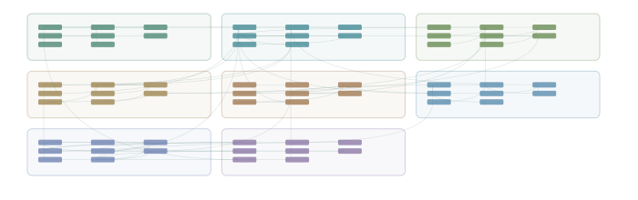
Euclidean foundations · Differential calculus · Local structure
+ 5 more regions
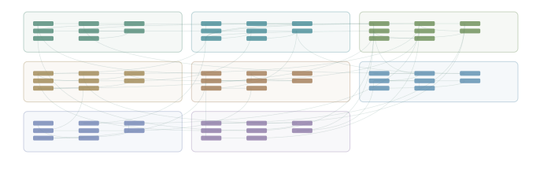
Holomorphic foundations · Contour integration · Analyticity and uniqueness
+ 5 more regions
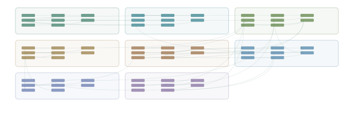
Measure and integration · Measure representation · Lp and Banach spaces
+ 5 more regions
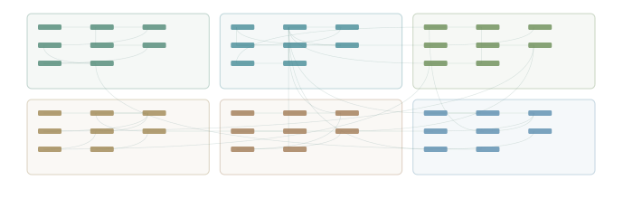
Fourier series · Euclidean Fourier analysis · Norm estimates and summability
+ 3 more regions
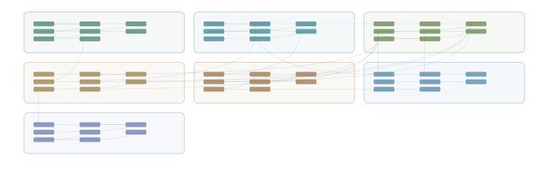
Metric and uniform structure · Measure construction · Integration
+ 4 more regions
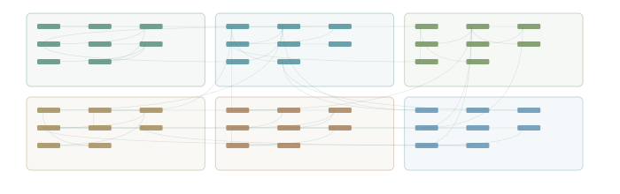
Affine algebraic geometry · Dimension and local algebra · Morphisms and projective geometry
+ 3 more regions
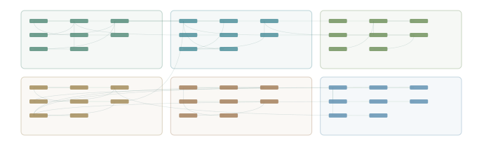
Spaces, quotients and duality · Polynomials and invariant spaces · Canonical forms and module structure
+ 3 more regions
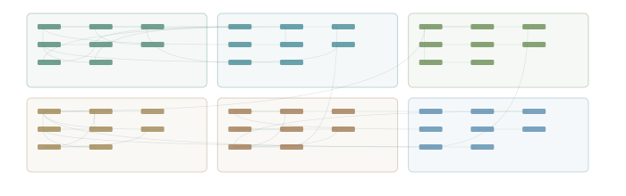
Groups and symmetry · Finite group structure · Rings and commutative structure
+ 3 more regions
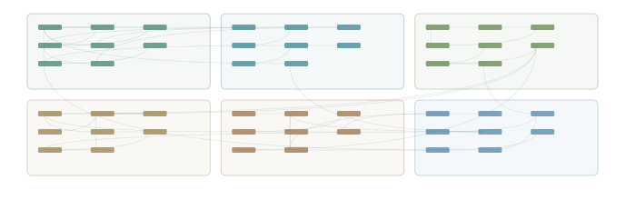
Representations and complete reducibility · Characters and induction · Compact groups and Lie groups
+ 3 more regions
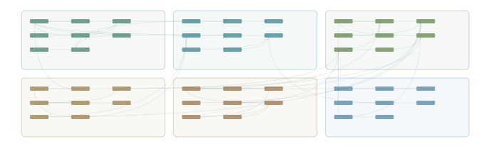
Homotopy and fundamental groups · Coverings and higher homotopy · Singular homology
+ 3 more regions
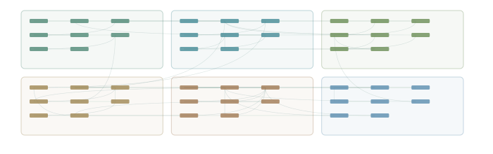
Smooth manifolds and local models · Bundles, tensors and differential forms · Integration, flows and distributions
+ 3 more regions
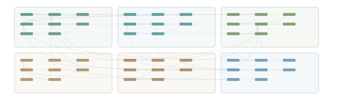
Spaces and continuity · Products and quotients · Connectedness and compactness
+ 3 more regions
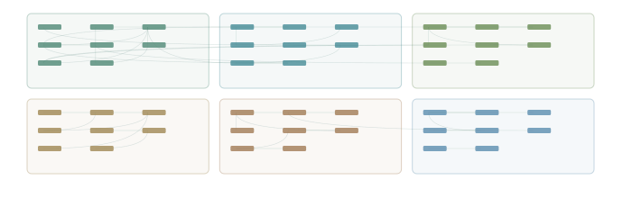
Optimization models and convexity · Duality and optimality · First-order and second-order algorithms
+ 3 more regions
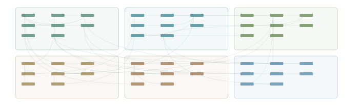
Models and first-order equations · Distributions and Sobolev spaces · Weak elliptic problems
+ 3 more regions
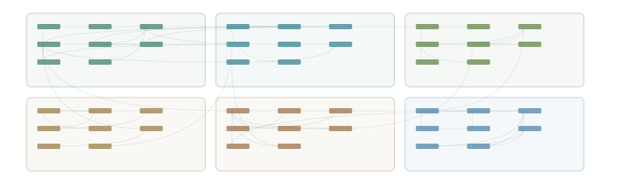
Probability spaces and integration · Convergence and limit laws · Conditional expectation and martingales
+ 3 more regions
Try a broader subject or region name, or return to the full library.
Each atlas maps selected mathematical relationships. The book view provides a separate guide to the subject’s graduate syllabus.
Open a subject, then use its regions to move from foundations to advanced topics. Pan and zoom to explore the full map.
Select a node for its statement, assumptions and references. Arrow types distinguish definitions, proof ingredients, consequences and conceptual bridges.
Follow incoming or outgoing dependencies and directed paths. Add your own objects and connections, then export a portable graph.